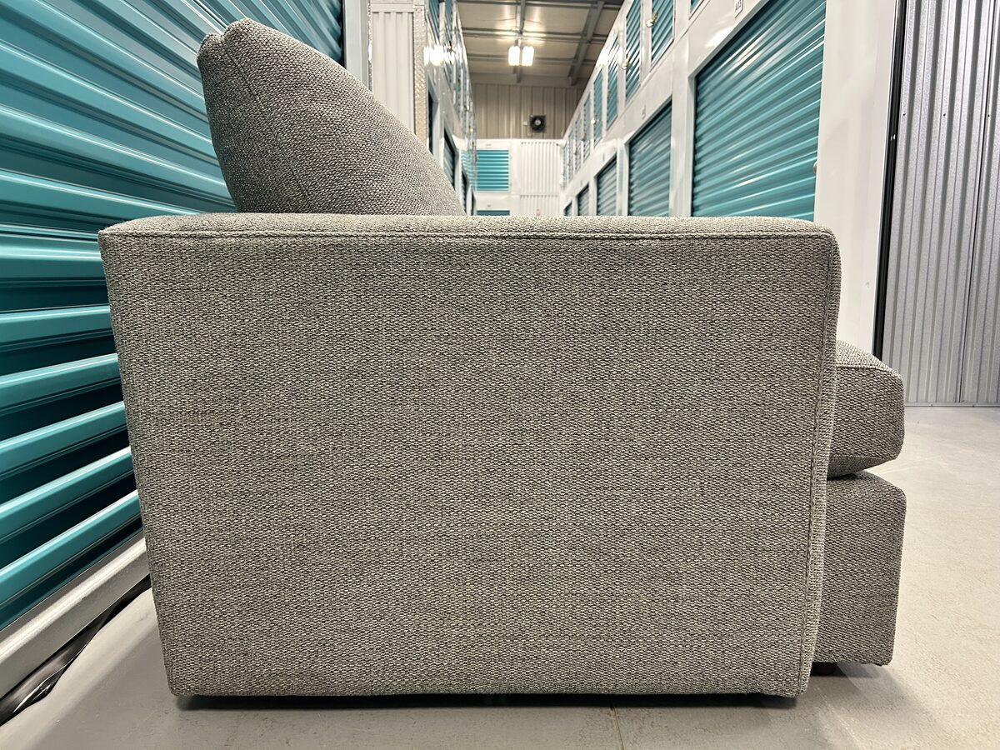
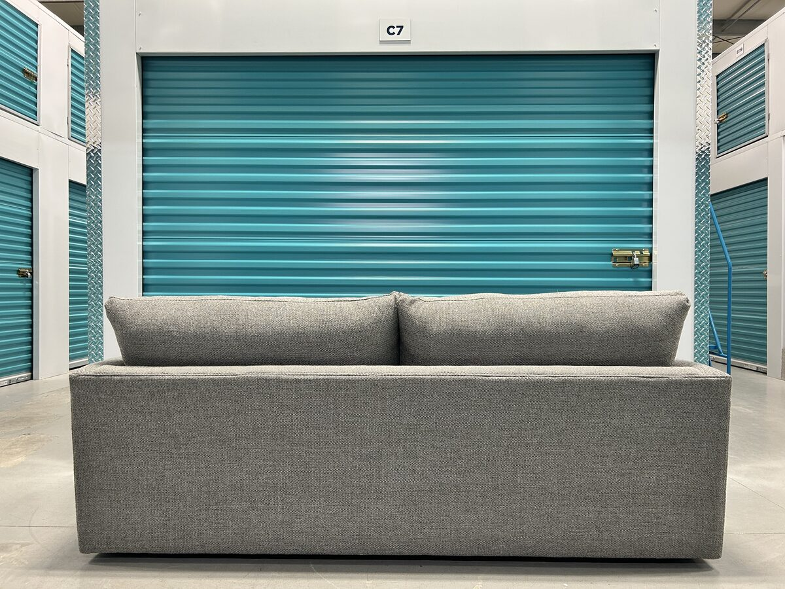

Lounge 83-Inch Bench Sofa — Taft Steel Everweave
The Crate & Barrel Lounge is the brand’s bestselling sofa, and this was a matched pair — two identical 83-inch bench-cushion Lounges in Taft Steel, a two-toned grey Everweave performance fabric, sold individually. Slim track arms keep the profile light, and the single bench cushion gives one continuous 73-inch seat with no centre gap. Benchmade in the USA on an FSC-certified kiln-dried hardwood frame with a spring-up Flexolator foundation, it measures 83 inches wide, 41 deep, and 37 tall. We picked the pair up in the Riverside area of St. Albert; label-dated May 2024, both came to us in like-new condition.
If you have a Lounge or a similar Crate & Barrel sofa you’re thinking about selling, we buy Crate & Barrel directly — no listing, no waiting. Our team handles the full, specialized in-home removal and transport.
Description
These came as a matched pair — two identical Lounge 83-inch bench sofas, sold individually at the same per-sofa price. A true matched pair is genuinely rare on the resale market. The Lounge is Crate & Barrel's bestselling sofa for a reason: relaxed, sink-in comfort in a clean, modern shell. Slim track arms keep the profile light and maximize actual sitting space, medium-depth seats make it as easy to sit up with a book as to settle in for a movie, and the supersoft back cushions invite exactly the kind of curling up the design is known for. This is the 83-inch bench-cushion version — one long, uninterrupted 73-inch seat with no centre gap, which keeps the look tailored and the seating continuous. The upholstery is Taft in the Steel colourway, one of Crate & Barrel's Everweave performance fabrics. It reads as a modern interpretation of bouclé — a two-toned textured weave with real depth up close — while the 70% polypropylene, 30% polyester blend is engineered for the strength and durability to stand up to active family life. The fabric is woven in the United States. Underneath, this is a benchmade sofa built in the USA: an FSC-certified hardwood frame kiln-dried to prevent warping, seat cushions of supportive plant-based polyfoam wrapped in a soft fiber and feather-down blend, and fiber-down back cushions in a special ticking fabric that keeps feathers in place while the cushions hold their shape over time. The cushions ride on a spring-up Flexolator foundation, independently tested and designed to eliminate sagging.
Features
- FSC®-certified hardwood frame from responsibly managed forests, benchmade and kiln-dried to prevent warping
- Seat cushion: supportive plant-based polyfoam wrapped in a soft fiber and feather-down blend
- Fiber-down back cushions in feather-proof ticking that maintains shape and comfort over time
- Spring-up Flexolator foundation, independently tested and designed to eliminate sagging
- Slim track arms lighten the look and maximize sitting space
- Taft Steel Everweave performance fabric — 70% polypropylene / 30% polyester, woven in the USA
- Made in USA of domestic and imported materials
- Inside seat: 73 in wide × 24 in deep; seat height 18 in; arm and frame height 25 in; diagonal depth 48 in
Condition
Includes
All designer pieces are inspected for construction, materials, and manufacturer consistency before listing.
Frequently Asked Questions
Is this an authentic Crate & Barrel Lounge sofa?
Yes. The original manufacturer's label is attached and confirms the piece: made for Crate & Barrel in Conover, North Carolina, in the Taft Steel fabric, with a May 21, 2024 label date. Every designer piece we list is inspected for construction, materials, and manufacturer consistency before going up.
Is this the current Lounge, the Lounge II, or the Lounge Deep?
This is the current-generation Lounge — the model Crate & Barrel sells today, label-dated May 2024. If you knew the line as the Lounge II, it's the same continuing design: Crate & Barrel simply renamed it back to Lounge. What this is not is the Lounge Deep, the deeper-profile variant — this is the standard Lounge at 41 inches deep with a 24-inch seat depth, in the 83-inch bench-cushion configuration.
Were these two identical sofas?
Yes. This was a matched pair — two of the same Lounge 83-inch bench sofa, both in the Taft Steel fabric and in matching condition, sold individually at the same per-sofa price for a facing or L-shaped layout.
What is the Taft Steel fabric like?
Taft is one of Crate & Barrel's Everweave performance fabrics — a two-toned textured weave that reads as a modern take on bouclé. The Steel colourway is a versatile mid-grey. The blend is 70% polypropylene and 30% polyester, woven in the United States and designed for the durability to withstand active family life.
Is the Taft Steel fabric pet-friendly and easy to clean?
It is well suited to homes with pets and kids. The dominant fibre is polypropylene, which is naturally moisture- and stain-resistant, so spills tend to sit on the surface rather than soak in. The tight two-toned weave also resists snags better than a looped bouclé. Vacuum it regularly and blot spills promptly with a water-based upholstery cleaner and it will keep looking the way it does in the photos.
What is a bench cushion like to live with?
A bench cushion is one continuous seat cushion instead of two or three separate ones. There is no centre gap to swallow phones and remotes, no seams to keep straight, and stretching out across the 73-inch inside seat is genuinely comfortable. It gives the sofa a cleaner, more tailored line than divided cushions.
What are the exact dimensions?
Overall: 83 inches wide, 41 inches deep, 37 inches high. Inside seat: 73 inches wide and 24 inches deep, with an 18-inch seat height. Arm and frame height: 25 inches. Diagonal depth: 48 inches — the measurement that matters for tight hallways, stairwells, and elevators.
Do you deliver?
Yes. We deliver throughout Edmonton and surrounding areas, and we arrange delivery across Alberta on request. Delivery is offered for an additional fee that depends on distance and access.